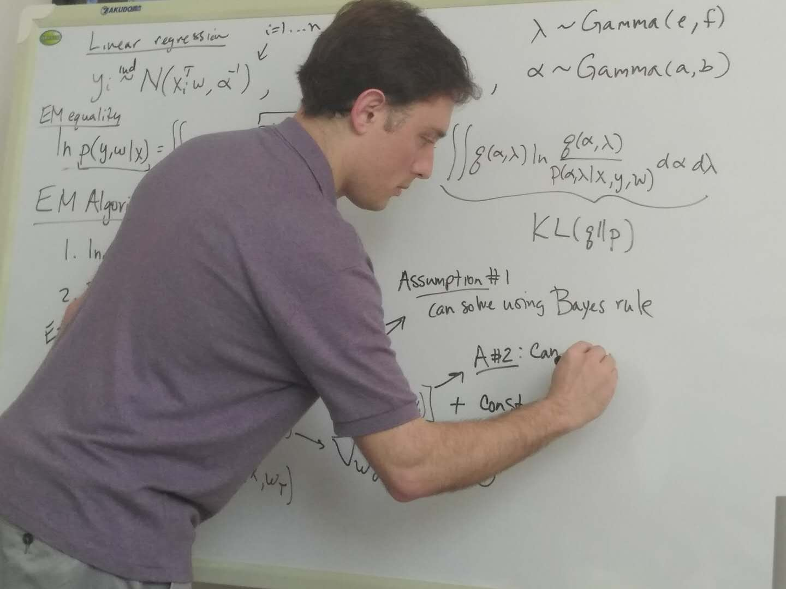
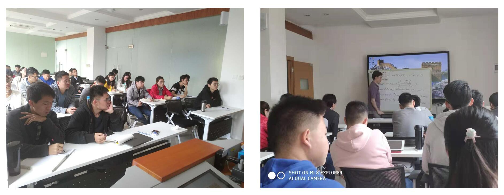

初春三月，厦门的余寒还未完全褪去。我院特别邀请厦门大学闽江讲座教授、哥伦比亚大学教授John W. Paisley来到美丽的厦门大学，为我们带来了三天的课程"贝叶斯机器学习模型"。

John W. Paisley教授是美国常春藤联盟美国哥伦比亚大学电子与计算机工程系副教授，是机器学习，特别是贝叶斯机器学习领域的著名学者，在IEEE TPAMI/NIPS/ICML/CVPR/ICCV等机器学习顶尖期刊会议上发表大量论文。其在edx网站上开设的课程《机器学习》被列为2019年国际上5大顶尖机器学习课程。

虽然课程只有短短三天，但John通过其细致认真的讲课，从最基础的公式层层推导，论证了贝叶斯机器学习理论的应用场景，为我们带来了丰富的文化大餐。在课堂上，John考虑到学生的语言理解情况，经常在板书过程中询问学生是否有不理解的地方。课间休息时候，也会积极的回答同学们的疑问。
此次课程也吸引了学校不同实验室、不同年级的学生参加。更有华南理工大学两位研究生前来学习。同时，实验室对John的到来致以最热烈的欢迎，丁老师在其授课期间，也抽出时间参与到课堂中，不断地总结该部分授课内容，并解释给同学们其中的内在意义。
其此次课程学习资料可通过此处下载。